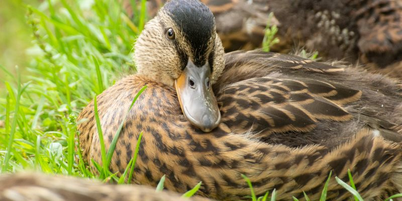
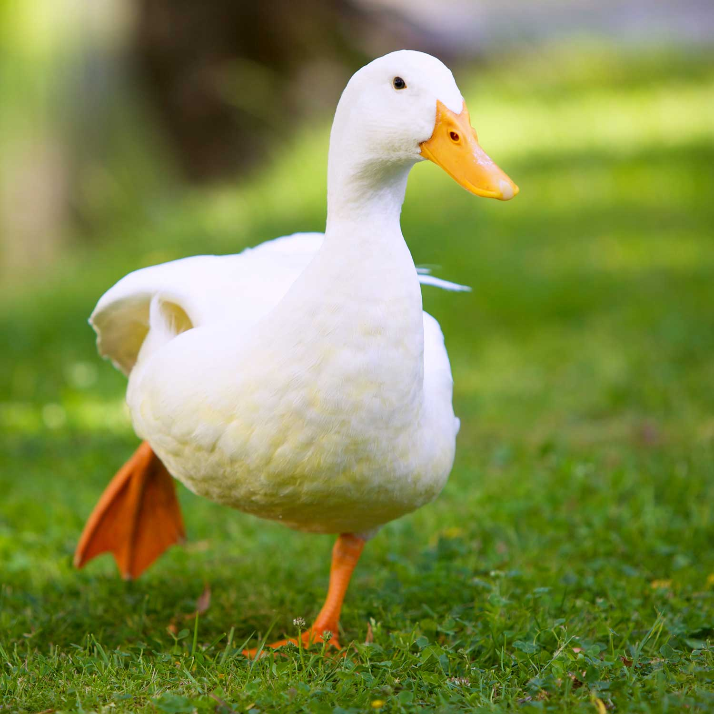
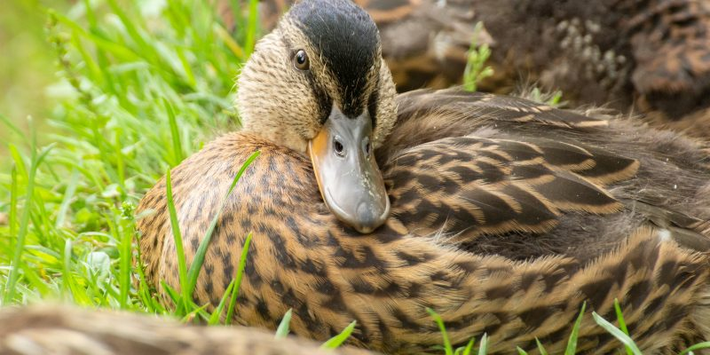
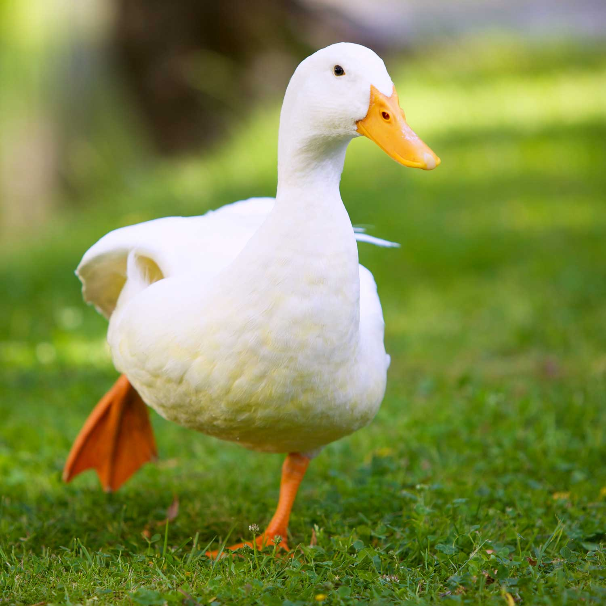

Patos
Los patos son aves acuáticas que pertenecen a la familia Anatidae. Son conocidos por su capacidad de nadar, gracias a sus patas palmeadas, y su característico "cuac". Los patos se encuentran en casi todas partes del mundo y son populares en muchas culturas.


 


